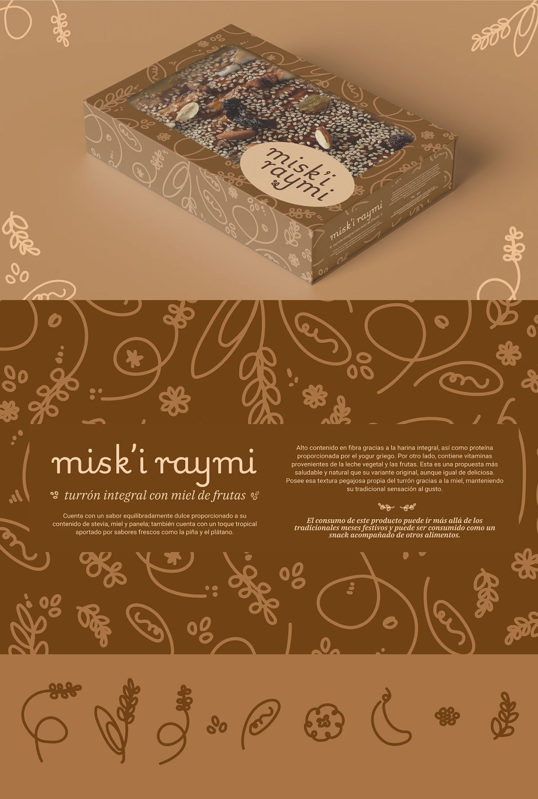

Identidad visual — Packaging
Miski Raymi
Misk’i raymi nace de la idea de reconectar con lo natural desde lo cotidiano: un turrón que se aleja del exceso y se acerca a lo esencial. Este proyecto transmite valores como calidez, honestidad y bienestar.
↑